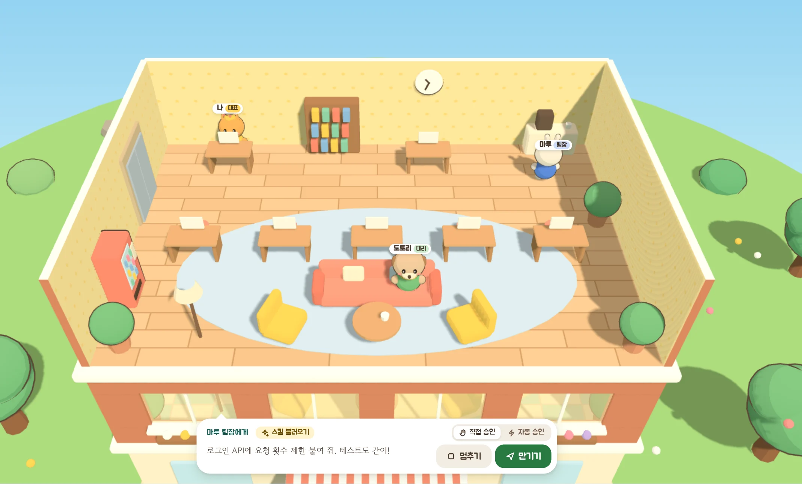
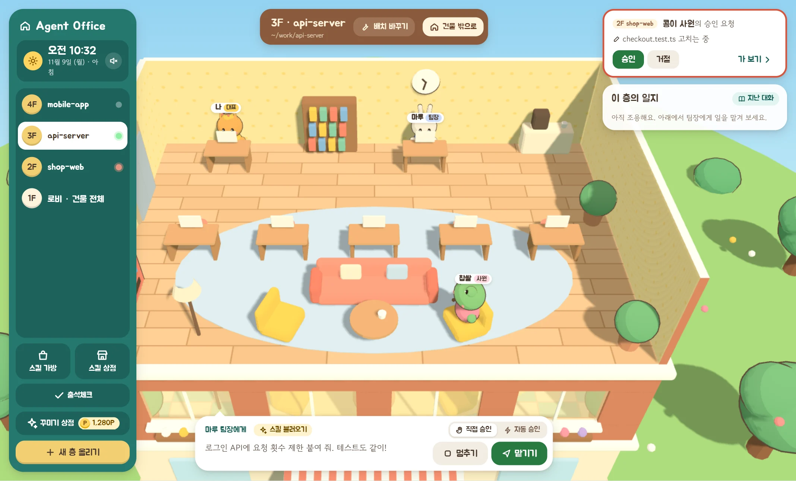
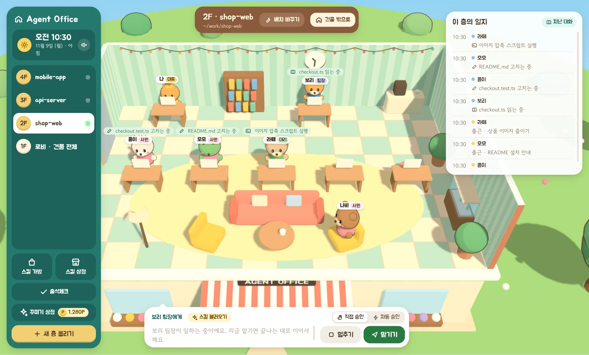
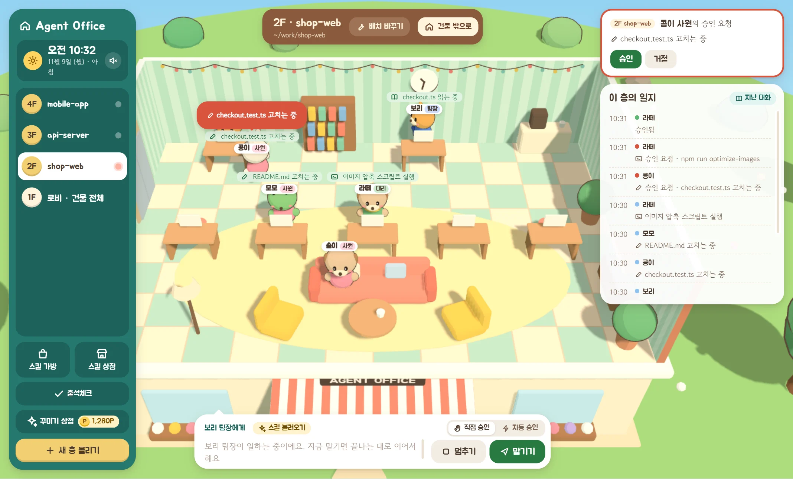
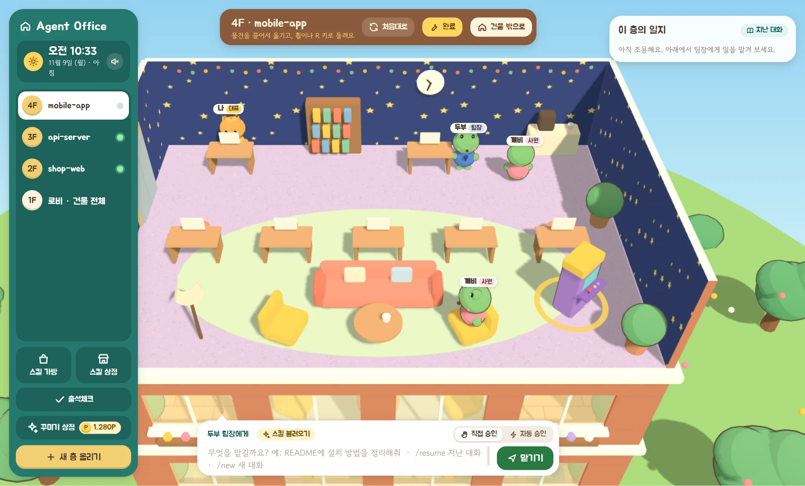
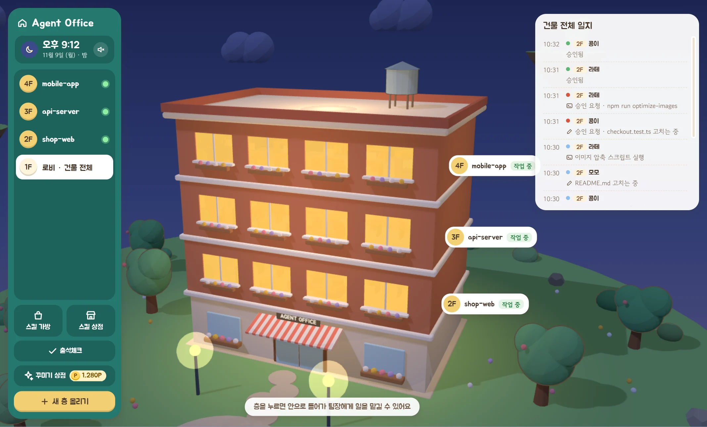
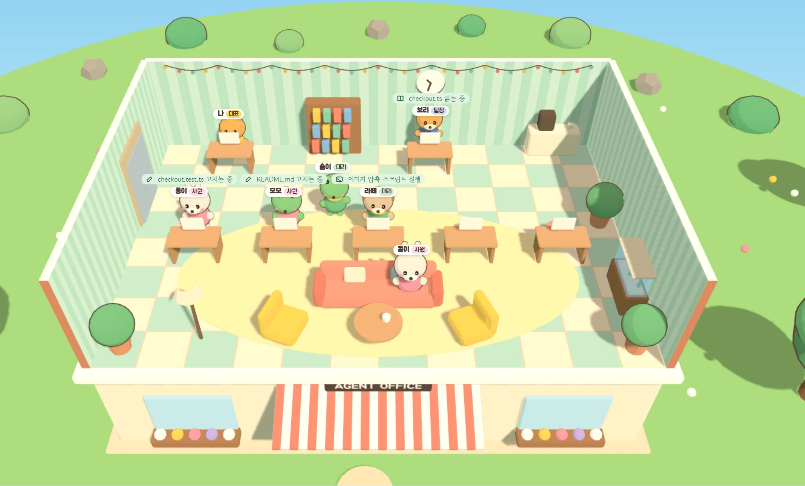
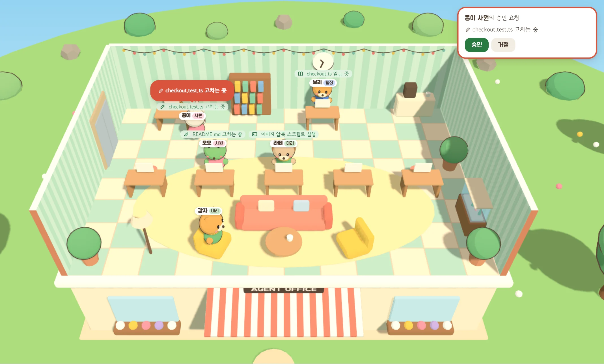
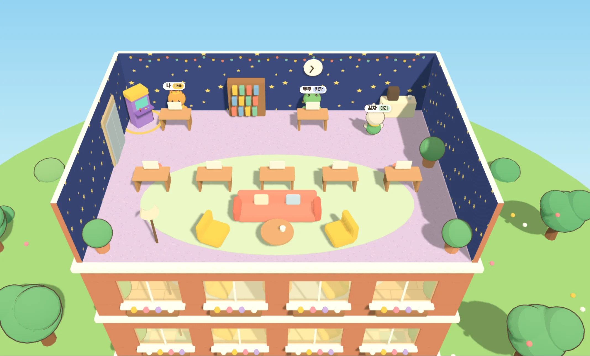
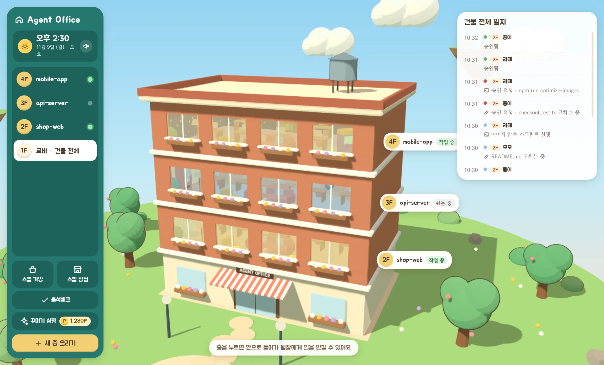

한 줄이면 팀장이
일을 시작해요
층에 들어가 아래 칸에 할 일을 적으면, 그 층의 프로젝트 폴더에서 Claude Code가 돌아요. 팀장이 무엇을 하는지 말풍선으로 알려 줘요.
- 지시는 줄을 서요일하는 중에 맡긴 일은 끝나는 대로 이어서 해요.
- 지난 대화도 그대로
/resume으로 예전 대화를,/new로 새 대화를 시작해요.






층에 들어가 한 줄로 일을 맡기면, 팀장이 바로 답해요.
층에 들어가 아래 칸에 할 일을 적으면, 그 층의 프로젝트 폴더에서 Claude Code가 돌아요. 팀장이 무엇을 하는지 말풍선으로 알려 줘요.
/resume으로 예전 대화를, /new로 새 대화를 시작해요.
팀장이 하위 에이전트를 부르면, 엘리베이터에서 직원이 내려 자기 책상에 앉아요. 누가 어떤 파일을 읽고 고치는지 머리 위에 떠요.

파일 수정, 명령 실행, 인터넷 접근은 직원이 대표 책상까지 걸어와 물어봐요. 대표님이 승인해야 진행돼요.

일을 맡길 때마다 포인트가 쌓여요. 벽지, 바닥, 수족관과 오락기로 층마다 따로 꾸미고, 끌어서 원하는 자리에 놓아요.

프로젝트 폴더를 고르면 층이 하나 올라가요. 밖에서 보면 어느 층이 일하는 중인지, 누가 결재를 기다리는지 창문과 풍선으로 알 수 있어요. 하늘은 컴퓨터 시계를 따라 낮에서 밤으로 바뀌어요.

이 앱은 내 컴퓨터에 깔린 Claude Code CLI로 일해요. 설치한 뒤 터미널에서 한 번 로그인해 두세요.
claude auth login
Claude Code 설치 안내 보기
내 컴퓨터에 맞는 설치 파일을 받아 열어요. 사용 요금은 쓰고 계신 Claude 요금제에서 그대로 나가요.
무료로 내려받기"새 층 올리기"로 프로젝트 폴더를 고르면 끝. 층에 들어가 팀장에게 첫 일을 맡겨 보세요.
아직 코드 서명을 하지 않은 앱이라 운영체제가 한 번 확인을 받아요.
무료 · 오픈소스(MIT) · 내 컴퓨터에서만 돌아가요
Claude Code CLI가 필요해요. 지난 버전은 GitHub 릴리스에서 받을 수 있어요.